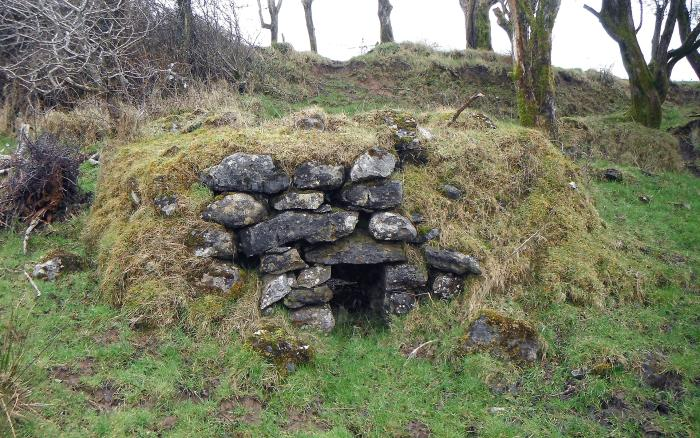

Quand'ero piccolissimo (appena poco più di un bimbo) mio padre mi portò a vedere l'ultima accensione dell'ultima "calcàra" della valle.
Venivano detti nella mia zona "calcàre" i forni rudimentali, praticamente identici a quelli romani e medioevali, per produrre quell'allora prezioso materiale che è la calce viva, cioè l'ossido di calcio -CaO-
I pochi ruderi di quella calcàra esistono ancora, ormai del tutto sepolti dai rovi e dalla vegetazione spontanea che cresce lungo la strada e ai margini del bosco di una stretta valle ombrosa.
Ecco come si faceva in queste piccole fornaci per la produzione locale, dai tempi di Romolo e Remo a quelli di mio padre.
Non è possibile far vedere la foto di ciò che resta di questo impianto, ma l'immagine seguente rende sufficientemente l'idea di come avrebbe potuto essere fino a qualche decennio fa, aumentando l'altezza di un paio di metri.

La calcàra era una costruzione circolare del tutto simile ad un piccolo nuraghe sardo, alta circa quattro metri, fatta di grosse pietre al contorno e con una grande cavità all'interno alla quale si accedeva tramite una piccola apertura alla base.
La volta della cavità veniva riempita, ammassandoli con arte, di grossi frammenti di roccia calcarea (cioè costituiti da carbonato di calcio CaCO3, di cui la zona era ricca); al di sotto della volta tutto il restante spazio veniva letteralmente stipato di centinaia di quelle che erano chiamate dai boscaioli "spinarele", cioè piccole fascine di legna secca e sottile derivanti dalla pulizia invernale, allora accuratissima, dei boschi.
Una volta completate le operazioni di riempimento, questa specie di rustico altoforno veniva acceso.
Le spinarele, una volta toccate dalla fiamma, bruciavano nè più nè meno come fossero benzina... e questo particolare che ho visto da bambino mi è rimasto fotografato nella memoria in maniera indelebile.
Qualche "diversamente giovane" capitato in questo strambo blog si ricorderà di quei vecchi catechismi e di quelle omelie parrocchiali nei quali gli inferni fiammeggianti erano lasciati immaginare agli adulti peccatori e ai bambini ignari.
Beh, l'inferno come me l'avevano descritto da bambino (e quello fiammeggiante di Dante) era esattamente come il ventre di quella calcàra.
Una fiamma infernale s'intravvedeva dalla porticina, dalla quale l'aria aspirata alimentava il vortice rovente che lambendo il calcare lo surriscaldava e poi usciva sotto forma di una altissima colonna di fumo e faville da quel vulcano in miniatura.
Essa veniva continuamente alimentata con nuove fascine, e così via per giorni interi fino al momento in cui il mastro calcàro avesse ritenuta compiuta l'operazione di cottura.
E' banale (ma la scrivo per i non chimici) immaginare la reazione che avveniva nel calcare per mezzo del calore:
CaCO3 --> CaO + CO2 (1)
Traducendo la semplicissima formula, significa che il carbonato di calcio a circa 900° gradi si scinde in ossido di calcio e anidride carbonica.
I "sassi" calcarei sono diventati sassi di calce viva, purgandosi dell'anidride carbonica che se ne è andata sotto forma di gas.
Dopo il tempo convenuto si lasciava raffreddare lentamente (pregando tutti i santi che nel frattempo dal cielo non piovesse!) e poi la calce viva veniva rapidamente caricata sui carretti o su qualche scalcinato camion Dodge residuato bellico americano e la si portava a "spegnere".
Lo spegnimento si faceva in prossimità del cantiere edile o della casa in ristrutturazione, in una apposita fossa fatta con delle tavole in legno nella quale si ponevano i pezzi di CaO ancora tiepidi, sui quali veniva versata cautamente dell'acqua con un secchio.
Anche qui la reazione è facile:
CaO + H2O --> Ca(OH)2 (2)
L'ossido di calcio reagisce con l'acqua e si trasforma in idrossido di calcio, Ca(OH)2.
La reazione della calce viva con acqua è molto esotermica e l'acqua gettata entrava in ebollizione, causando spruzzi di idrossido di calcio caustico assai pericolosi.
I bambini venivano tenuti alla larga dalla spegnimento della calce, perchè tutti sapevano che se ne ricevevi uno schizzetto in un occhio, eri orbo per il resto della vita.
Mescolando e mescolando, l'idrossido di calcio si andava formando sotto forma di un cremoso, morbido e bianchissimo grassello, ed era la calce spenta, con la quale, per generazioni e generazioni, si sono costruite case, palazzi e monumenti fino all'avvento del cemento.
(La calce spenta viene impiegata estesamente anche oggi, ma ovviamente si fabbrica e si usa in altre condizioni, anche se il principio rimane identico).
E per concludere: come mai con la calce si possono costruire manufatti che durano secoli?
Anche qui la chimica (grazie, chimica!) ci viene in aiuto:
Ca(OH)2 + CO2 --> CaCO3 + H2O (3)
L'idrossido di calcio mescolato alla sabbia e ghiaia assorbe lentamente l'anidride carbonica dall'aria (esattamente quella che aveva perduto nelle fiamme della calcàra), e facendo presa si ritrasforma in carbonato di calcio duro e resistente (più o meno come quello dei sassi originari).
E l'acqua che pian piano si libera? E' esattamente quella aggiunta col secchio!
Visto come il cerchio chimico si chiude perfettamente? Una meraviglia...
Siete curiosi di sapere anche le quantità in gioco? (Questi calcolini, in chimica, si chiamano stechiometria):
-Da 1 quintale di calcare (supposto puro) si ottengono 56 Kg di calce viva e sono stati emessi 44 Kg di anidride carbonica (22 metri cubi di gas, reazione 1)
-Da 56 Kg di calce viva, aggiungendo 18 Kg di acqua, si ottengono 74 Kg di calce spenta (reazione 2)
-Quei 74 Kg di calce spenta assorbiranno, durante la lenta presa, 44 Kg di anidride carbonica ed emetteranno 18 Kg di acqua (reazione 3)
-E 74 + 44 - 18 quanto fa? 100! Giusto il quintale di partenza!
-I conti tornano! Nulla si crea e nulla si distrugge- esclamerebbe con soddisfazione il vecchio Lavoisier, che alla stechiometria ci teneva...
[per inciso, 100, 74, 56, 44 e 18 sono i pesi molecolari di CaCO3, Ca(OH)2, CaO, CO2 e H2O)